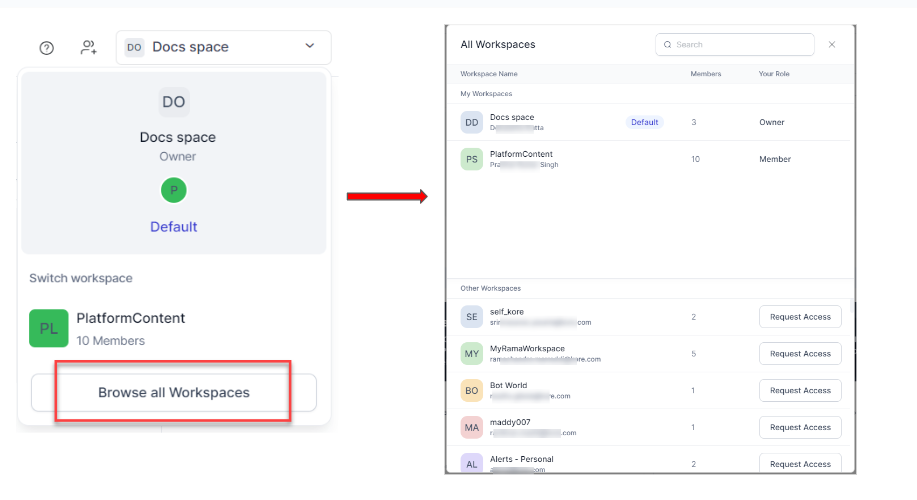
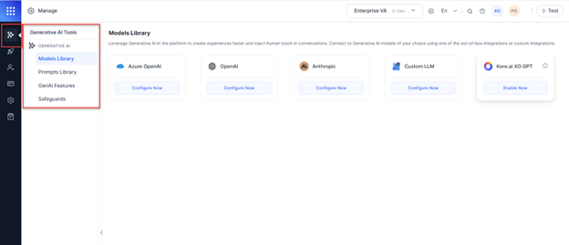
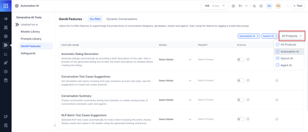
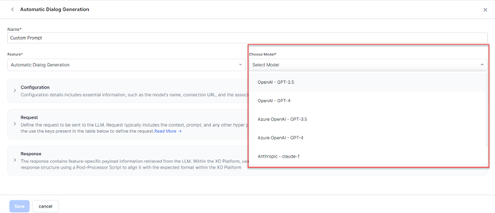
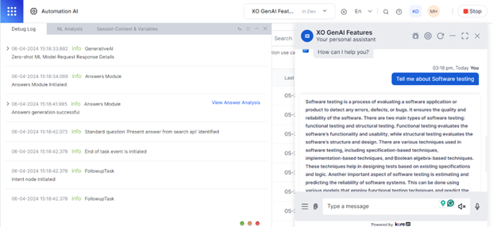

Platform Services Updates¶
This document provides information on the feature updates and enhancements introduced in the Platform Services of XO v11.x releases.
v11.5.0 September 01, 2024¶
Patch Release
This update includes enhancements and bug fixes. Key enhancements included in this release are summarized below.
LLM and Generative AI¶
Azure OpenAI GPT-4 Turbo and GPT-4o Support for LLM & Generative AI Features¶
The Platform now supports two new Azure OpenAI models for various Co-Pilot and Dynamic Conversations Features:
- GPT-4 Turbo: It’s a high-speed, accurate model ideal for real-time applications like chatbots, virtual assistants, and content generation.
- GPT-4o: It’s the most advanced multimodal model, which can accept both text and images as input, offering improved efficiency and cost-effectiveness compared to GPT-4 Turbo.
Apps Versioning for GenAI & LLM¶
The platform now includes GenAI and LLM settings in app versioning, including Model Integrations, Custom Prompts, Feature & Model Prompt mapping, and Safeguards. It allows platform users to manage and track GenAI & LLM configuration changes across different bot/app versions, enhancing control and customization of GenAI features.
Analytics¶
Enhanced Rate Limit API Response¶
This update helps API users understand which specific rate limit they've hit, allowing them to plan their request strategies more effectively and reduce errors in API usage.
Specific error messages:
- Per-minute limit: "You've exceeded the per-minute rate limit. Please wait for some time before retrying."
- Hourly limit: "You've exceeded the hourly rate limit. Please wait for some time before retrying."
App Management¶
App Deletion Feature Update¶
The platform now allows the deletion of published apps. It provides more flexible app management, improving control over app lifecycles while maintaining data security and user accountability.
Key updates:
- Soft Deletion:
- Initiated by app/bot owners from App Settings.
- Requires email verification.
- 30-day restoration window.
- Post-Deletion:
- The App is invisible in the main interface.
- Runtime features cease.
- Configurations are retained for 30 days.
- Restoration:
- Available in the admin console for 30 days.
- Restores all pre-deletion configurations.
- Notifications:
- Emails to all admin role users.
- Reminders before permanent deletion.
- Data Management:
- Secure storage during soft deletion.
- Permanent deletion after 30 days.
- Subscribed App:
- Deletion is not allowed during an active subscription.
- Restoration after the billing date requires a re-subscription.
- Admin Features:
- New BAC section for deleted apps.
- Audit logs for app restoration.
- New role permission for deleted apps view.
Channels¶
Customizable VXML Error Threshold in IVR Voice Call Properties¶
This update removes the restriction of having a fixed VXML Error Threshold at the environment level that applies to all bots, with no option for customization. Platform users now have the flexibility to set the number of retries at the bot level, tailoring it to the specific needs of their system.
Key updates:
- Customizable Error Threshold: Set retry limits based on the system that is being used.
- Default and Custom Options: Choose the default setting or customize the number of retries.
- Retry Range: Customizable range from 1 to 3, 3 being the default.
Backward Compatibility:
- Existing bots default to the Use Default option, which is also included in the bot export/import processes.
Update or Delete Delivered Bot Messages in MS Teams¶
Bot messages in Microsoft Teams can now be updated or deleted even after they have been delivered to users. This feature provides greater flexibility and control, allowing platform users to disable or remove template messages after a user has taken action on them.
Key updates:
- New ‘channelActionMetadata’ object:
- Captures MsTeams ActivityID, ConversationID, and KoreMessageID.
- Only stores metadata for the latest bot message.
- New channel utility functions:
- channelUtil.getActionMetadata(): Retrieves metadata.
- channelUtil.executeAction(): Updates or deletes messages.
- Automatic updates:
- Chat history updates for modified messages
- Message tags emitted for updated/deleted messages
Getting Started¶
Enhanced Workspace Switcher Experience¶
The enhanced Workspace Switcher has a more cohesive, modern experience, making workspace switching more intuitive and efficient for platform users.

{kind=link}
New Signup Journey Update for Custom Setup¶
This update helps bridge the gap in the new user Signing up using the Custom Onboarding journey for both Automation AI and Contact Center AI. This Custom Onboarding Journey now automatically triggers a new App creation process, improving the overall onboarding experience.
Key updates:
- Data Persistence:
- Product selection (Automation AI or CCAI) is now saved.
- The onboarding type ("Custom") is recorded.
- Streamlined App Creation:
- The new App creation journey skips product type and journey type selection.
- Uses data from initial onboarding steps.
- Continuous Journey:
- The process now continues directly to the "Naming the App" screen.
v11.4.1 August 11, 2024¶
Patch Release
This update includes bug fixes and minor enhancements.
LLM and Generative AI¶
Multi-language Support for System and Custom LLMs¶
The platform now supports all bot languages for both system and custom LLMs.
Key updates:
- Language-specific responses: LLMs can now generate responses in bot languages that LLMs also support.
- Preserved sentiment: Responses maintain original sentiment.
- Expanded language options: Available for all LLM features and prompts.
Key benefits:
- Improved accuracy in non-English interactions.
- Enhanced user experience for global audiences.
Custom LLM Framework Update for GenAI Node¶
The platform has significantly enhanced the GenAI Node’s custom prompt creation flow. It now supports dynamic variables in the prompt definition, gives full control over the prompt structure, and dynamically defines prompt definitions using JavaScript. These updates provide greater flexibility, better conversation context control, and more sophisticated prompt engineering capabilities, allowing platform users to create more advanced and tailored GenAI applications with improved custom LLM integrations.
Key updates:
- Dynamic variables improvements: Conversation history is redefined as an array of objects. New variables are introduced for Required Entities, Collected Entities, and Conversation History Length.
- Variable support: Context, Environment, and Content variables are now supported in prompts and scripts.
- JavaScript mode: Ability to create prompts using JavaScript and preview option for script validation.
App Settings¶
Update App Name Post-Publication¶
Administrators or workspace owners can now modify an app’s name even after publishing it. This helps keep app names current and relevant without disrupting system operations or user experiences.
Key updates:
- There is a new Edit icon for the app name on the App Settings page.
- The app's unique identifier (UUID) remains unchanged, so there will be no impact on the existing integrations and functionalities.
- A new log is added to the Change Logs to highlight the change. For e.g., "App Name is updated from Old_Name to New_Name”.
Channels¶
MS Teams Modal Dialog Support¶
The platform now supports Microsoft Teams Modal Dialogs, enhancing the interactive capabilities of virtual assistants deployed on the MS Teams channel. This support allows platform users to handle the 'Invoke' action-type messages used by MS Teams for Modal Dialogs.
Key updates:
- New “Modal Dialogs” toggle: The new toggle is introduced in the channel configuration and is off by default.
- Custom URL configuration: When enabled, platform users can set a Custom URL to which the platform forwards Modal Dialog messages for processing.
- Message handling: The platform maintains the conversation context when handling Modal Dialog messages. It forwards these messages with pre-context to the Custom URL for processing, then relays responses back to the user, maintaining a seamless interaction.
Key benefits:
- Enhanced interactivity: Enables form-based experiences in Teams.
- Seamless integration: Preserves conversation context throughout.
- Improved user experience: Supports more complex interactions.
Backward compatibility:
- This update is available to all existing apps, and it’s disabled by default. If enabled, the app needs to be republished to make these changes take effect.
Admin Console¶
IP Address Restriction Enhancement¶
The Admin Console now supports Regex patterns for IP address restrictions. The regex support makes it easier for administrators to manage access across extensive IP ranges.
Key updates:
- Administrators can enter IP ranges using regex patterns when IP Address restriction is enabled.
- Account access is limited to IP addresses matching the provided regex patterns.
Key benefits:
- Reduced manual entry.
- Greater precision in identifying IP addresses through pattern matching.
- Streamlined administration for large IP ranges.
v11.4 July 27, 2024¶
Patch Release
Key features and enhancements included in this release are summarized below.
LLM & Generative AI Framework¶
OpenAI GPT-4 Turbo and GPT-4o Support for LLM & Generative AI Features¶
The Platform now supports two new OpenAI models for various Co-Pilot and Dynamic Conversations features.
- GPT-4 Turbo is a high-speed, accurate model ideal for real-time applications like chatbots, virtual assistants, and content generation.
- GPT-4o is an advanced multimodal model that can accept both text and images as input, offering improved efficiency and cost-effectiveness compared to GPT-4 Turbo.
Admin Console¶
Usage Information for Enterprise Accounts¶
Enterprise users can now view consolidated usage data for all their Bots and Apps in the Bot Admin Console.
Key updates:
- The new Billing menu in the Admin Console left navigation.
- Combined XO10 and XO11 usage statistics on a single page.
- Detailed usage trends are accessible via the Manage button.
Deploy Management¶
Import, Export, and Publish GenAI and LLM Settings¶
A new 'GenAI and LLM' option is now available under the 'Settings' section for Import, Export, and Publish operations.
The setting includes:
- Integrations
- Prompts and Requests Library
- Feature Mappings
- Guardrails (for v11 only)
Key benefits:
- Deploy GenAI and LLM features across multiple bots.
- Enhance flexibility in managing GenAI-related settings.
- Ensure seamless operation of runtime features for end-users.
Full vs. Incremental Import:
- Full Import
- Deletes existing models and prompts in the target app.
- Overwrites with models, prompts, and GenAI features from the import file.
- Retains model configurations if a model exists in both source and target
- Replaces all feature mappings, custom instructions, and guardrails.
- Incremental Import
- Keeps existing prompts, only adds new ones.
- Replaces all feature mappings, custom instructions, and guardrails.
- Both import types:
- Preserve existing integrations.
- Import XO-GPT integration as-is.
- Enable imported features with warnings.
- Handle "Azure Open AI by Kore.ai" integration based on token status.
Backward compatibility:
- Existing bots in the Configured state are copied to the Published state.
These changes aim to streamline the deployment and management of GenAI and LLM features across multiple bots and ensure the seamless operation of runtime features for end-users. Learn more
Channels¶
SMS Channel Configuration¶
The Platform now offers SMS channel configuration for various service providers. The SMS Channel enables customer communication via text messages. It supports inbound, outbound, or bidirectional messaging on the digital platform. This addition empowers businesses to conduct SMS campaigns and expand their customer communication options. Learn more
Instagram Channel Support¶
The XO Platform has added Instagram as a new channel option. Users can enable and deploy their virtual assistants on Instagram. Learn more
APIs¶
SDK Push Notifications Management APIs¶
The platform has introduced a new set of SDK Notifications APIs to enhance control over push notifications for mobile devices using the Web/Mobile SDK channel.
Key updates:
- A new API scope is added to the Bot builder - "SDKPushNotification”.
- Three new APIs have been introduced:
- DeviceSubscription API: Subscribe the device to SDK push messages and receive subscription status and device details.
- Subscribed User Devices API: Lists all the mobile devices subscribed to SDK push notifications and their OS types.
- DeviceUnsubscription API: Unsubscribes SDK push messages for specific or all devices of a user.
Key benefits:
- Improved user control: Manage users’ push notification preferences more effectively.
- Enhanced flexibility: Manage device subscriptions programmatically.
Public API for SSO Configuration Management¶
The platform has introduced public APIs for managing Single Sign-On (SSO) configurations. This new API complements existing bot creation and publishing APIs, allowing for a more comprehensive automation of account setup processes. It significantly enhances the platform's capabilities for enterprise customers who require frequent audits or automated deployments.
Key updates:
- Public API for SSO configuration management:
- Fetch the SSO Meta API: Returns the existing SSO configuration along with the URLs.
- Enable SSO API: Enables the SSO configuration for an account.
- Disable SSO API: Dsables the SSO configuration for an account.
- Update the SSO Configuration API: Updates the SSO configuration for an account.
- Support for SAML protocol.
Key benefits:
- Streamlined automation: Customers can now fully integrate SSO configuration into their CI/CD workflows.
- Reduced manual effort: Simplifies the audit process by allowing automated SSO setup.
- Increased flexibility: Account administrators can programmatically manage SSO settings.
- Improved efficiency: Facilitates faster and more consistent SSO deployment across accounts.
v11.3.1 July 13, 2024¶
Patch Release
This update includes bug fixes.
v11.3.0 June 29, 2024¶
Patch Release
LLM & Generative AI Framework¶
Free LLM Tokens for Generative AI Features¶
Free LLM tokens are now allocated to each newly created app, enabling the exploration of our generative AI capabilities. These tokens allow immediate access to AI-driven tools like Co-pilot and dynamic conversations without initial setup. Once an app's free tokens are exhausted, users can seamlessly transition to their own LLM configuration. The platform provides clear token usage notifications and an intuitive activation interface. This feature aims to boost AI tool engagement and streamline onboarding for new users. This is available only for the apps created in the Standard workspaces/accounts.
Learn more
Channels¶
Discontinuation of the Google Business Messages Channel¶
Google announced the discontinuation of the Google Business Messages channel from July 31, 2024. This channel will be phased out in the coming weeks. If you have alternative chat channels, consider inviting your customers to continue conversations there.
For more details, refer to the Google announcement.
v11.2.1 June 15, 2024¶
Patch Release
This update includes bug fixes.
v11.2 June 01, 2024¶
Patch Release
Key features and enhancements included in this release are summarized below.
LLM & Generative AI Framework¶
Improved Discoverability of Generative AI Tools¶
The platform has made it easier to discover and manage the Generative AI capabilities across products. The new Generative AI menu will be available in the primary navigation bar of Automation AI, Search AI, and Agent AI products.
Key updates include:
- Added a new top-level "Generative AI" menu within the Product Switcher, Automation AI, Search AI, and Agent AI areas. This provides quick access to Generative AI settings and tools. 
- Reorganized the Generative AI tools into four clear sub-categories:
- Models Library: Access the Models Library (LLM integrations).
- Prompts Library: Access the Prompts Library (default prompts and custom prompts).
- GenAI Features: Enable and configure Co-pilot and Dynamic Conversations capabilities. The available options will be automatically filtered based on which product area the users access this from.
- Safeguards: Manage data privacy with assistant-level and LLM-level anonymization of PII & sensitive data. Set up Guardrails to enforce appropriate AI outputs.
- Smart filtering in the Features section is based on the context from which the users access the Generative AI menu. This will only show the relevant feature options for that product (e.g., Automation, Search, Agent). The users can easily add/remove this filter as needed.

{kind=link}
{kind=link}
Introducing Custom Prompts for Pre-built Models¶
The platform now supports custom prompts for the prebuilt LLM integrations. This will be in addition to the current support of default prompts. This new capability delivers a consistent prompt engineering experience across custom and pre-built models, making crafting the prompts for various features easy. 
{kind=link}
Answers Module Details in the Debug Logs¶
The Debug Logs presented while testing the app now include detailed logs for the responses from the Search AI product. This includes information on the various stages, response times, and LLM outputs. This enhancement streamlines testing, improves debugging and provides deeper insights into the Search AI performance.

{kind=link}
v11.1.1 May 11, 2024¶
Patch Release
This update includes bug fixes.
v11.1.0 April 27, 2024¶
Minor Release
Key features and enhancements included in this release are summarized below.
LLM and Generative AI¶
Custom LLM Integration Support for Rephrase Dialog Responses¶
Rephrase Dialog Responses now supports Custom LLMs in addition to commercial LLMs. This allows platform users to use the rephrasing feature with their own custom-trained language models and create customized prompts tailored to their specific use cases, models, and linguistic contexts, providing greater flexibility and control over the rephrasing process and conversational experiences.
Learn more
Custom LLM Integration Support for Answer Generation¶
In addition to pre-built commercial LLMs, the Answer Generation now supports Custom LLMs. It allows platform users to craft personalized prompts to unlock the full potential of the Answer Generation and deliver uniquely tailored conversation experiences for their users. Learn more
Kore.ai XO GPT Supports Vector Generation and Answer Generation (Beta)¶
Kore.ai XO GPT now supports Answer Generation and Vector Generation. The XO GPT provides a range of models, including the fine-tuned Mistral-Answers Model for Answer Generation and E5, Labse, and MPNet embedding models for Vector Generation. Learn more
Flows & Channels¶
Updated Default Start Flow¶
All fields of the default Start Flows can now be edited except the associated channel.
Learn more
Support for Thread Handling for Virtual Assistants in Slack Channels¶
The Platform now offers native support for threaded conversations in the Slack channel. Users can initiate a new thread from any message within a Slack channel or direct message group.
Additionally, the platform provides extended functionality for developers. It can automatically create a new thread whenever a user @mentions the virtual assistant in a Slack channel. This behavior is configurable, giving developers control over this feature.